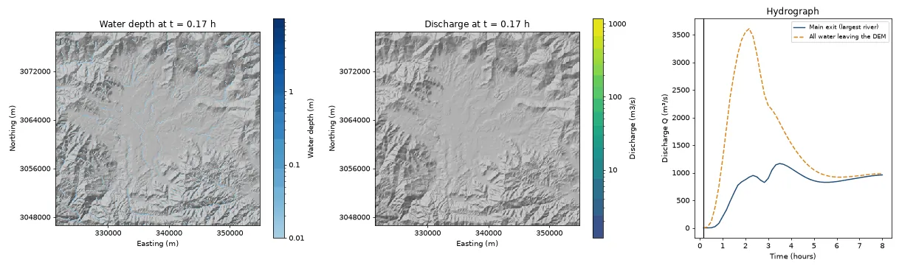

Python package · MIT license · v0.3.0 on PyPI
MRRpy
Rainfall–runoff and flood routing for any basin on Earth, from a DEM and a storm.
- Runoff physics you can switch: Green–Ampt infiltration with soil recovery, variable source area, impervious surfaces, or SCS curve number, combined without counting rain twice.
- Routing derived from the Saint-Venant equations: kinematic, Muskingum–Cunge, semi-implicit diffusive, and local-inertial schemes.
- An exact, linear-time implicit solver on the drainage tree; water conserved to a median of 3 parts per million.
- Python, a command-line wizard, a Jupyter form, and a QGIS plugin; runs on CPU, or on GPU 34 times faster at 1.38 million cells.
pip install MRRpy